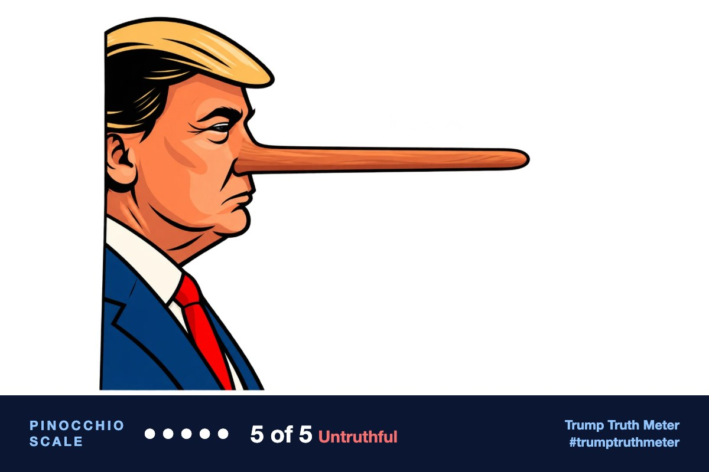

RT: https://truthsocial.com/users/realDonaldTrump/statuses/117389589417251241The Ohio Arena was already full to the brim — And yet these people were still trying to get in. The New York Times said, “There were empty seats” when, in fact, there were none, and thousands of people had to be turned away. The New York Times, and many other Artificial Media Outlets, should be arrested for their dishonesty and disservice to our Country. When Bernie Sanders has 500 to 1,000 people, they make it sound like it’s the biggest event that ever took place. When PRESIDENT DONALD J. TRUMP has 50,000 people, they make it sound like nobody showed up! President DONALD J. TRUMP
[Quoting @realDonaldTrump] Pictures attached! President DJT
UntruthfulAccuracy 18/100

The attached video shows a real line outside Trump’s Oct. 3, 2026 rally at a Vandalia, Ohio high-school activity center, but reporters on site saw empty upper seats, and the gym holds roughly 4,500 people—not 50,000. There is no evidence thousands were turned away, and the New York Times’ empty-seats report matches what other outlets saw.
Editor’s note: Reviewers agreed the post is Trump’s voice, combative, and that the arrest line is opinion, but split on the venue: one review placed the rally at Youngstown’s Covelli Centre on Oct. 4 and treated the NYT quote as unverifiable. The better-sourced reviews, and the video of a low brick school building, match the Oct. 3 Vandalia high-school event, where reporters documented empty upper seats in a roughly 4,500-seat gym. That makes the “no empty seats” and “50,000” claims false, not merely unverifiable.
AI fact-check by Gemini 3.8 Flash + Grok 4.7 + Claude Opus 5.5 + ChatGPT (gpt-6-sol). Checked Oct 5, 2026, 2:06 PM ET.